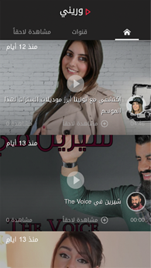
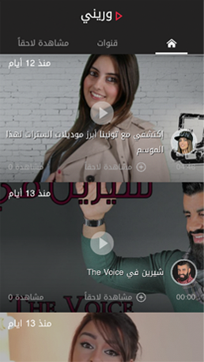
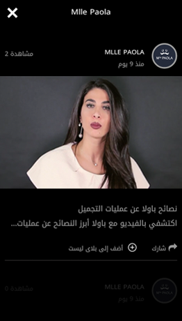
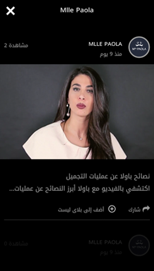

متوفر على متجر جوجل بلاي


هل تبحثون عن حيل ذكية تسهّل حياتكم؟ هل تتتبعون آخر الصيحات ولكن لا تعرفون إن كانت فعلاً تستحق كلّ هذه الضجة؟ هل أنتم مهتمون بعالم التكنولوجيا و المحركات و الأكسسوارات الذكية؟ ماذا عن الماكياج و الموضة والعناية بالشعر و الطبخ؟
"وريني" هو تطبيق مجاني يتناول أبرز مواضيع اللايف ستايل. كما ويقدم لكم مئات الفيديوهات الترفيهية و التعليمية حول الموضة، الجمال، أجدد الصيحات، أخبار المشاهير بالإضافة إلى التمارين الرياضية و المحركات. لا تترددوا وقوموا بتحميل تطبيق "وريني" الآن على جوّالكم و استفيدوا من مختلف الخدمات و النصائح لنمط حياة عصري و أكثر سهولة.
 

 

هل تبحثون عن حيل ذكية تسهّل حياتكم؟ هل تتتبعون آخر الصيحات ولكن لا تعرفون إن كانت فعلاً تستحق كلّ هذه الضجة؟ هل أنتم مهتمون بعالم التكنولوجيا و المحركات و الأكسسوارات الذكية؟ ماذا عن الماكياج و الموضة والعناية بالشعر و الطبخ؟
"وريني" هو تطبيق مجاني يتناول أبرز مواضيع اللايف ستايل. كما ويقدم لكم مئات الفيديوهات الترفيهية و التعليمية حول الموضة، الجمال، أجدد الصيحات، أخبار المشاهير بالإضافة إلى التمارين الرياضية و المحركات. لا تترددوا وقوموا بتحميل تطبيق "وريني" الآن على جوّالكم و استفيدوا من مختلف الخدمات و النصائح لنمط حياة عصري و أكثر سهولة.